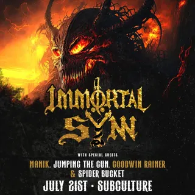

Spider Bucket
pcola local5 shows logged
on the record since July 2024, first seen at subculture on a bill with immortal syn and manik. most recently at betty’s, August 2026.
- first loggedJul 21, 2024 · subculture
- most played atbetty’s ×2 shows
- busiest year2026 · 4 shows
- biggest lineup6 acts · Aug 2026
- most shared bills withsideswept bangs ×3 bills shared
flyer wall
 Aug 20, 2026 · betty’s
Aug 20, 2026 · betty’s Aug 8, 2026 · the handlebar
Aug 8, 2026 · the handlebar Apr 9, 2026 · 309
Apr 9, 2026 · 309 Jan 28, 2026 · betty’s
Jan 28, 2026 · betty’s
Jul 21, 2024 · subculturepast shows
- 2026
- 20Aug 2026Dumpster Meds, Torso Man, Tape & Tears, Quiver the Busker, Spider Bucket, Dentadabetty’s
- 8Aug 2026Caca Del Diablo, Mourning Glories, Bangarang Peter, Spider Bucket, Sideswept Bangsthe handlebar
- 9Apr 2026Bryan Raymond, Twig & Leaf, Spider Bucket, Sideswept Bangs, Dentada309
- 28Jan 2026Matt Pless, Goodwin Rainer, Spider Bucket, Sideswept Bangsbetty’s
- 2024
- 21Jul 2024Immortal Syn, Manik, Jumping The Gun, Goodwin Rainer, Spider Bucketsubculture
shared bills with
sideswept bangs ×3dentada ×2goodwin rainer ×2bangarang peterbryan raymondcaca del diablodumpster medsimmortal synjumping the gunmanikmatt plessmourning glories
act pages are built automatically from the show archive, so something may be off: a misspelled name, a missing link, the wrong type, or a bad local/touring call. no disrespect meant. wrong on any of that, or want a listen link (youtube or bandcamp) or live footage added? send it in.